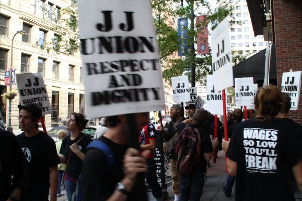

Submitted on Fri, 10/15/2010 - 2:58am
Support Builds for Sandwich Workers in Run-up to Historic Union Election with Rally Planned for Monday.
Rally and Press Conference: 5:30pm Monday 10/18, Block E Jimmy John's
MINNEAPOLIS– The Minneapolis Regional Labor Federation has voted to endorse the IWW Jimmy John's Workers Union, throwing the weight of its 75,000 members in 125 affiliated labor unions behind the unprecedented effort to unionize franchised fast food. 200 Jimmy John's workers at 10 Minneapolis locations will vote in an historic NLRB union election on October 22nd. If a majority of workers vote in favor of unionization, 10 Minneapolis Jimmy John's will become the first union fast food franchise in the United States.
“We are so grateful for this support. The franchise owner Mike Mulligan has been saying we aren't a 'real' union. If we're not 'real,' then why does the largest union federation in this city support us? We are very real, and we are going to win our demands for fair wages, consistent scheduling, sick days, and respect,” said Ayo Collins, a member of the union at the Ninth St. Jimmy John's.
Franchise owner Mike Mulligan has refused to address the workers grievances over pay hovering around minimum wage, shifts as short as one hour, and pressure on workers to work while sick. Instead, Mulligan has employed a third-party union-busting firm at an estimated cost of $3000 per day to undermine the unionization effort with a campaign of captive audience meetings, misinformation, and misrepresentations, often crossing over into illegality.
In response, the IWW Jimmy Johns Workers Union has filed Unfair Labor Practice charges over 22 alleged labor rights violations. The National Labor Relations Board is investigating the charges.
Despite a harsh employer response, the sandwich workers remain confident of victory.
“You can only keep people down for so long. We are standing up for better wages, consistent hours, and a better life for ourselves and our coworkers. And we know that millions of fast food workers across the country are watching. We will win,” said David Boehnke, a union member at the Skyway Jimmy John's.
The Jimmy Johns Workers Union, open to employees at the company nationwide, is affiliated with the Industrial Workers of the World labor union. Gaining prominence in recent years for organizing Starbucks workers, the IWW is a global union founded over a century ago for all working people.
Contacts - Ayo Collins, 612-281-0882; David Boehnke, 651-315-4222.